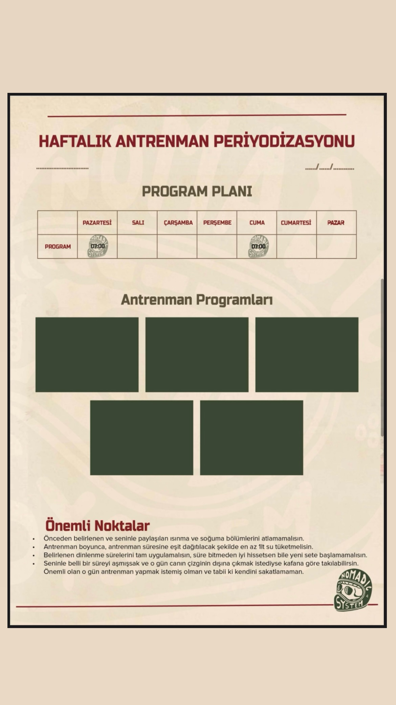

Coaching Manual
Disiplinin kağıda dökülmüş hali.
Haftalık Planlama Sistemi
Hayatının ritmine ayak uyduran esnek bir yapı.
Nomadic System'de antrenman programları, senin için bir yük değil; sürdürülebilir bir tempo aracıdır. Hazırlanan saha notları ve program kağıtları ile günlük yoğunluk yönetimini ve kaslarının toparlanma dengesini (recovery) kusursuz bir şekilde takip edersin.
Bu esnek planlama sistemi, haftanın değişen koşullarına göre antrenman günlerini kaydırabilmeni ve disiplininden kopmadan ilerlemeni sağlar.

Beslenme Planı Örneği
Katı yasaklar yerine, sürdürülebilir yakıt yönetimi.
Beslenme rehberimiz, klasik fitness diyetlerinin sıkıcılığından tamamen uzaktır. Vücudunun antrenman şiddetine bağlı olarak değişen enerji ihtiyacını karşılamak için Karbonhidrat Döngüsü mantığını kullanırız.
Ağır idman günlerinde performans ve hacmi desteklerken, dinlenme günlerinde sağlıklı yağlar ve protein ile iyileşme sürecini başlatırsın. Bu sistem, sosyal hayatından kopmadan hedefine ulaşmanı sağlayan esnek bir çerçeve sunar.

Planları Uygulama Rehberi
Haritayı nasıl okuman gerektiğini öğren.
Premium coaching (koçluk) kılavuzu, programının dilini çözmen için tasarlanmıştır. Program ikonları, hareketlerin tempo (tempo süresi) ve dinlenme aralıkları (rest period) gibi ince detaylar burada berraklaşır.
Bireysel antrenmanlarla grup seansları arasındaki renk kodlamalarını ve antrenmanın arkasında yatan biyomekanik mantığı öğrenerek, her idmana tam bir farkındalıkla girersin. Ezberlemez, neyi neden yaptığını bilirsin.